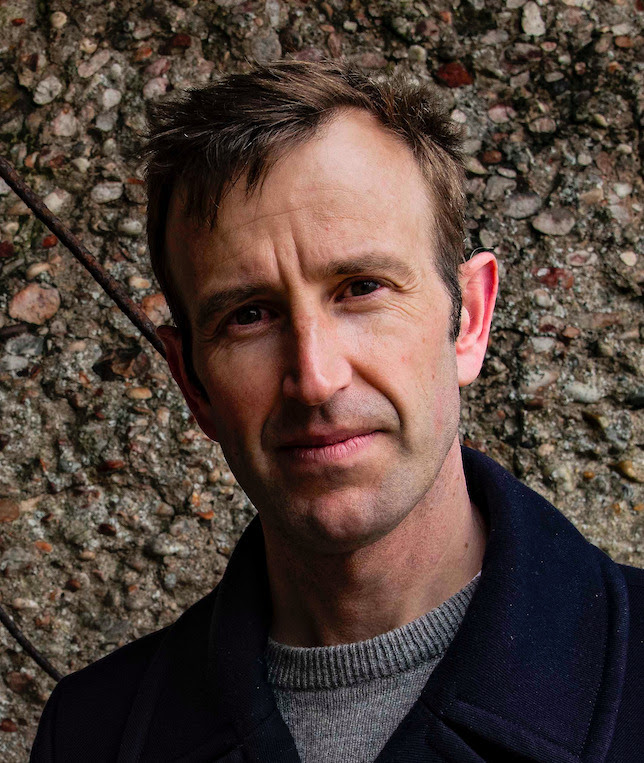

Chalk Streams
Chalk Streams are one of Earth's rarest habitats and almost all of them are found in England. Of the 260 true chalk streams on Earth, 224 of them flow from underground chalk aquifers in a band across eastern and southern England.
Celebrated in books and paintings for their crystal-clear water and rich plant and animal life (dragonflies, otters, kingfishers, water voles, flag iris, and watercress), for many people chalk streams are the quintessential image of the English countryside.
Now, however, our chalk streams are in deep trouble. Threatened with over-abstraction of their water, increasingly severe heatwaves and summer droughts, together with pollution from water companies and industrial agriculture, many chalk streams are now unrecognisable - flowing thick and brown with sediment, or dried up, with plummeting numbers of plant and animal species.
Can you help by becoming their champion? Write a poem about chalk streams and become the Chalk Stream Poet Laureate. We are looking for two - one young, one older!
The Chalk Streams (Protection) Bill is being brought as a Private Member's Bill to the House of Commons by Sarah Green, MP for Chesham and Amersham. It aims to provide specific additional protection for chalk streams from pollution, abstraction and other forms of environmental damage. It will be heard on Friday 21st June. Thinking about chalk streams, talking about them, and letting your MP know that this is an issue you care about, will help to support this Bill become legislation.
Update: Judging
After sifting through a wonderful flood of eclectic poems, the judges are now considering their shortlist. The longlist is below, and winners will be announced at the Awards Ceremony at the Houses of Parliament on the 29th of October.
Meet the judges:
Robert Macfarlane

Sunday Times best-selling author of, among others, Landmarks and Underland, as well as being a musician and Professor at Emmanuel College, Cambridge.
Linda Newbery
Costa Children's Book Prize-winning children's author of, among others, Lob, The Shell House and This Book is Cruelty-Free.
Mark Wormald
Fellow at Pembroke College, Cambridge, Chair of the Ted Hughes Society and author of The Catch.